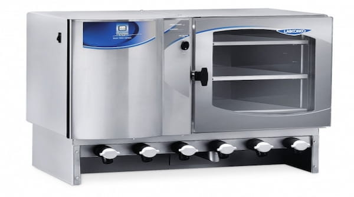

STI FAMILIA
STI, especialista y aliado estratégico en soluciones tecnológicas de maquinaria, equipos, herramientas e ingeniería para las industrias Farmacéutica, Cosmética, Cannabis, Química y de Alimentos.
Contamos con un equipo de profesionales, enfocados en identificar, capturar, estudiar y solucionar los diferentes proyectos; trabajando siempre de la mano del cliente, cumpliendo con sus requerimientos y exigencias con el fin de proveer la mejor opción de máquinas y equipos, siempre con el objetivo de lograr una óptima productividad y el cumplimiento de las normatividades BPM, FDA, INVIMA, ICA.